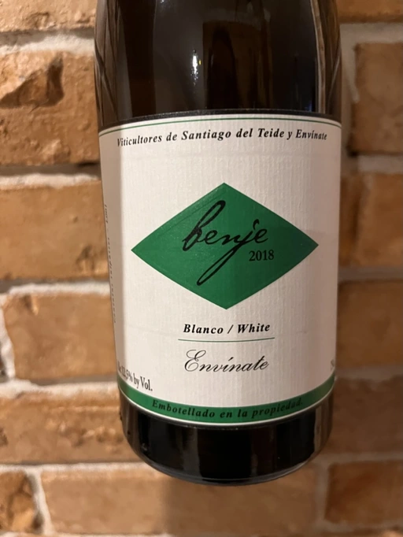

- Type
- White Still, Dry
- Producer
- Envínate
- Vintage
- 2018
- Location
- Spain, Ycoden Daute Isora DO
- Grapes
- Palomino Fino
- Alcohol
- 12.5
- Sugar
- NA
- Price
- 769 UAH
- Cellar
- N/A
Ratings
2023-01-03 - 7.75
Sophisticated and saline wine. Chamomile, machine oil, amber, iodine, tobacco, apple. Medium body, fresh, oily and slightly tart mouthfeel. Interesting flavours of fresh apple juice mixed with sunflower oil. Demanding style. I can’t decide if I like it or not. It lacks depth, but this tension is catchy somehow.